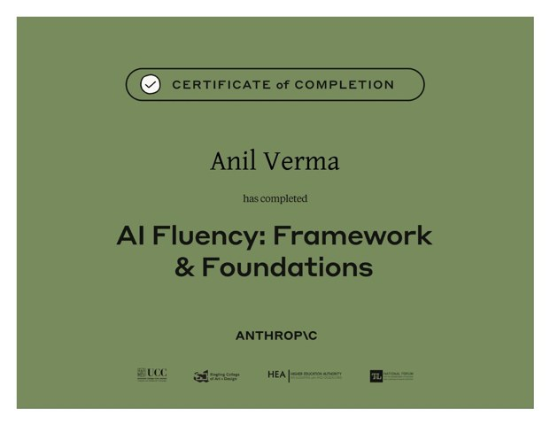
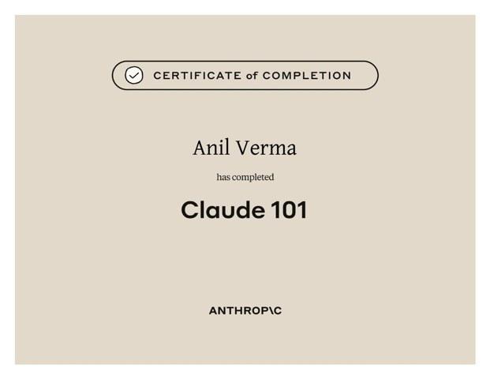
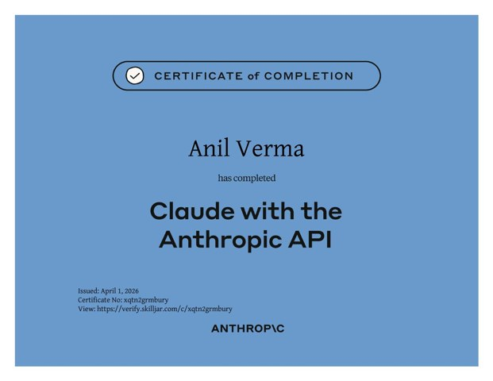
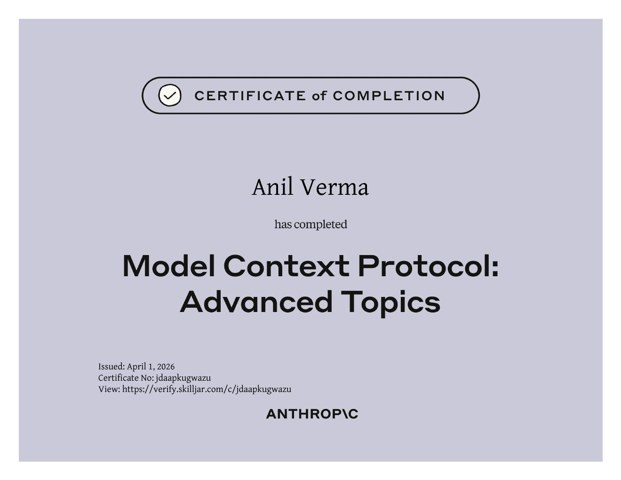
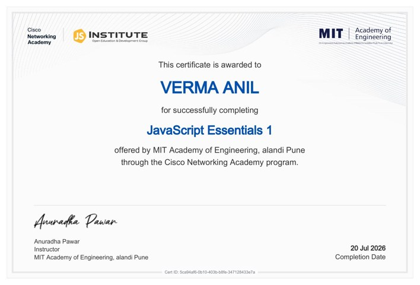
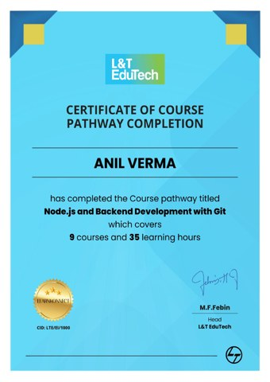
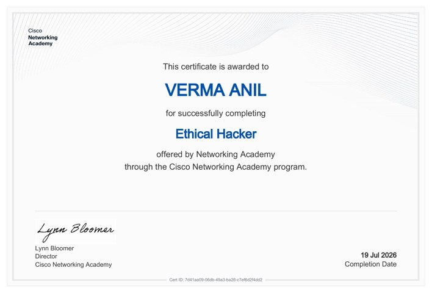
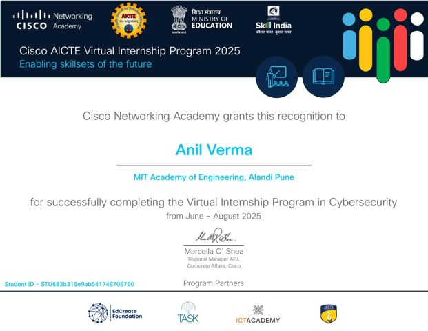

VERIFIED PDFAI Fluency: Framework & Foundations
Anthropic Academy
19 Mar 2026
Open certificate PDF ↗COURSES & CREDENTIALS
Selected credentials are linked to the original certificate PDFs. Titles and issuing organizations are transcribed from the supplied documents; dates are shown only where verified from the certificate or its accompanying metadata.
Each card opens its corresponding supplied PDF. Dates that were not clearly printed in the extracted document text are labelled as unavailable rather than guessed.

VERIFIED PDFAnthropic Academy
19 Mar 2026
Open certificate PDF ↗
VERIFIED PDFAnthropic Academy
19 Mar 2026
Open certificate PDF ↗
VERIFIED PDFAnthropic Academy
1 Apr 2026
Open certificate PDF ↗
VERIFIED PDFAnthropic Academy
1 Apr 2026
Open certificate PDF ↗L&T EduTech
Completion date not listed
Open certificate PDF ↗
VERIFIED PDFCisco Networking Academy / MIT Academy of Engineering
20 Jul 2026
Open certificate PDF ↗Cisco Networking Academy / MIT Academy of Engineering
21 Jul 2026
Open certificate PDF ↗
VERIFIED PDFL&T EduTech
Completion date not listed
Open certificate PDF ↗
VERIFIED PDFCisco Networking Academy
19 Jul 2026
Open certificate PDF ↗
VERIFIED PDFCisco Networking Academy / AICTE
2025 program
Open certificate PDF ↗